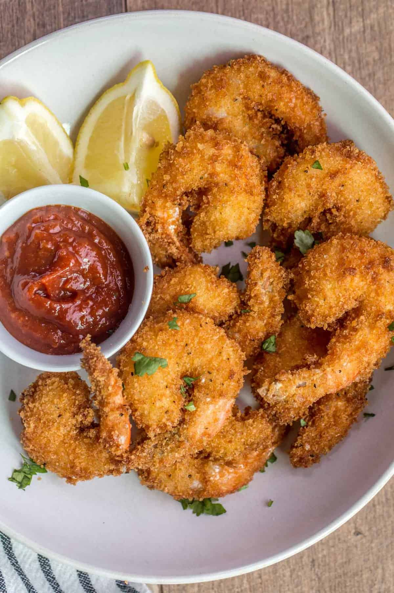

Fried Shrimp

Description
There truly is nothing better than a crispy, crunchy batch of fried shrimp. This easy, no-fuss recipe is perfect when that salty craving hits. Serve these lil' poppers in a po' boy or taco, or just enjoy them straight up with lemon wedges, cocktail sauce, and rémoulade.
Ingredients
- 3 cups canola oil, or as needed
- 2 large eggs, beaten
- 1 cup whole milk
- 2 tablespoons chile hot sauce (such as Cholula®)
- 2 pounds large peeled, deveined raw shrimp
- 3/4 cup all-purpose flour
- 2/3 cup cornmeal
- 1 1/2 teaspoons kosher salt
- 1 teaspoon freshly ground black pepper
- 1/2 teaspoon cayenne pepper
Steps